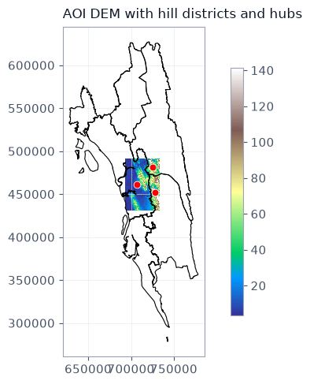
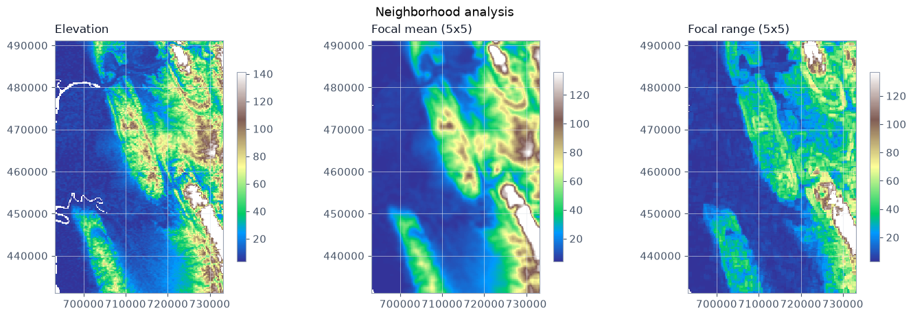
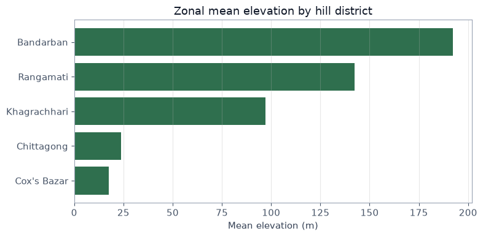
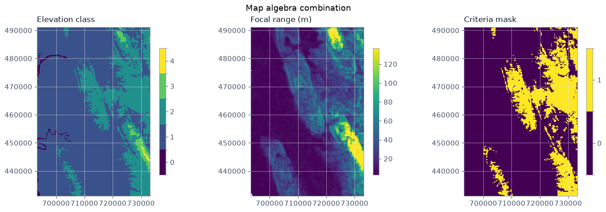

Raster analysis asks spatial questions of gridded surfaces: where values fall in a class, how a cell relates to its neighbourhood, how zones summarise a field, how layers combine, and how far features are from every cell. This notebook is the raster counterpart to 03_01_02_vector_analyis.ipynb inside Module 03.01.
It uses analysis helpers from geolattice.raster (reclassify, focal_statistics, zonal_stats, calc / raster_algebra, proximity, rasterize) on the Bangladesh hilly-district DEM and district polygons. The goal is the analysis pattern, not another catalogue of every raster I/O tool.
Overview
Analysis family
Question
GeoLattice tools in this notebook
Local (per cell)
Which class does each cell belong to?
reclassify
Neighborhood (focal)
How does a cell compare to its neighbours?
focal_statistics
Zonal
What is the distribution of values inside each polygon?
zonal_stats
Map algebra
How do two or more rasters combine into a criterion?
calc / raster_algebra
Distance / proximity
How far is each cell from a set of features?
rasterize, proximity
Related notebooks (do not duplicate here)
Topic
Notebook
Raster I/O, clip, resample, mosaic, fill, contour API tour
Locate the repository root, import the raster analysis helpers, and create an output folder.
Installation. This notebook needs installation option 1 (vector, raster, CRS and visualization): pip install "geolattice[core]". See “Installation options” in the GeoLattice README.
Code
# Display matplotlib figures inline in this Jupyter notebook.%matplotlib inlinefrom pathlib import Path # filesystem paths for rasters, vectors, and outputs# Third-party geospatial / plotting stack.import geopandas as gpd # district polygons and centroid hubsimport matplotlib.pyplot as plt # maps and bar chartsimport numpy as np # numeric helpers for class labelsimport pandas as pd # zonal tablesfrom IPython.display import display # rich table previewsfrom shapely.geometry import box # AOI polygon from DEM bounds# The installed package lives in src/; the repository root is its parent.import geolatticeROOT = Path(geolattice.__file__).resolve().parents[1]ifnot (ROOT /"Data").is_dir():raiseFileNotFoundError("Could not find the GeoLattice repository root.")# Raster analysis helpers used in this notebook.from geolattice.raster import ( calc, # map algebra convenience wrapper clip, # AOI crop only (full lesson in Module 02 / 03.02.01) focal_statistics, # neighborhood / moving-window stats open_raster_data, # metadata and array access proximity, # distance-to-target raster rasterize, # vector targets onto the DEM grid reclassify, # local thematic classes summarize_raster, # quick elevation summary zonal_stats, # polygon summaries of a raster)from geolattice.viz import apply_map_style, plot_raster, plot_rastersapply_map_style()BD_RASTER = ROOT /"Data"/"00_shared"/"raster_data"/"Bangladesh"BD_VECTOR = ROOT /"Data"/"00_shared"/"vector_data"/"Bangladesh"OUT = ROOT /"Data"/"00_shared"/"raster_data"/"output_folder"/"bangladesh"/"raster_analysis"OUT.mkdir(parents=True, exist_ok=True)DEM_FULL = BD_RASTER /"hilly_dem_BTM.tiff"DISTRICTS = BD_VECTOR /"bd_district_BTM.shp"assert DEM_FULL.exists(), f"Missing DEM: {DEM_FULL}"assert DISTRICTS.exists(), f"Missing districts: {DISTRICTS}"print(f"DEM: {DEM_FULL}")print(f"Districts: {DISTRICTS}")print(f"Output: {OUT}")
We use the hilly-district DEM (BTM, 250 m) and clip a central AOI so focal, algebra, and proximity steps stay responsive. District polygons that intersect the full DEM provide zones and centroid hubs for proximity.
Code
# Clip a central AOI from the full DEM (preprocessing detail lives elsewhere).with open_raster_data(DEM_FULL) as ds: b = ds.bounds mid_x =0.5* (b.minx + b.maxx) mid_y =0.5* (b.miny + b.maxy) half_x, half_y =20000.0, 30000.0 aoi_bounds = (mid_x - half_x, mid_y - half_y, mid_x + half_x, mid_y + half_y) dem_bounds = (b.minx, b.miny, b.maxx, b.maxy)dem = OUT /"aoi_dem.tif"clip(DEM_FULL, dem, bounds=aoi_bounds, overwrite=True)# Keep districts that intersect the full hilly DEM, with a numeric zone_id for zonal_stats.districts_all = gpd.read_file(DISTRICTS)full_poly = box(*dem_bounds)hill_districts = districts_all[districts_all.intersects(full_poly)].copy()hill_districts = hill_districts.reset_index(drop=True)hill_districts["zone_id"] = np.arange(1, len(hill_districts) +1, dtype=int)zones_path = OUT /"hill_districts.gpkg"hill_districts.to_file(zones_path, layer="districts", driver="GPKG")# Proximity hubs: representative points of each district clipped to the AOI# (full district centroids often fall outside this window).aoi_poly = box(*aoi_bounds)pieces = hill_districts.copy()pieces["geometry"] = pieces.geometry.intersection(aoi_poly)pieces = pieces[~pieces.geometry.is_empty & pieces.geometry.is_valid].copy()hubs = pieces.copy()hubs["geometry"] = hubs.geometry.representative_point()hubs_path = OUT /"aoi_hubs.gpkg"hubs.to_file(hubs_path, layer="hubs", driver="GPKG")print(f"AOI DEM: {dem.name}")print(summarize_raster(dem))print(f"Hill districts: {len(hill_districts)} -> {[n for n in hill_districts['ADM2_EN']]}")print(f"AOI hubs: {len(hubs)}")
# Map the AOI DEM with district boundaries and proximity hubs.ax = plot_raster( dem, title="AOI DEM with hill districts and hubs", cmap="terrain", kind="general", robust=True, show=False,)hill_districts.boundary.plot(ax=ax, color="black", linewidth=0.8)hubs.plot(ax=ax, color="red", markersize=40, edgecolor="white", linewidth=0.6, zorder=5)plt.show()

Local analysis: reclassify elevation
Local analysis assigns a new value to each cell from that cell alone. Reclassification turns continuous elevation into thematic bands used in land suitability, hazard screening, and map algebra.
Focal analysis replaces each cell with a statistic of a moving window. A local mean smooths noise; a local range summarises short-range relief without computing full morphometric derivatives (those belong in 03.02.02).
Code
# 5x5 focal mean (smooth) and focal range (local relief proxy).focal_mean = OUT /"focal_mean_5x5.tif"focal_range = OUT /"focal_range_5x5.tif"focal_statistics(dem, focal_mean, statistic="mean", size=5, overwrite=True)focal_statistics(dem, focal_range, statistic="range", size=5, overwrite=True)plot_rasters( [dem, focal_mean, focal_range], titles=["Elevation", "Focal mean (5x5)", "Focal range (5x5)"], ncols=3, cmap="terrain", robust=True, figsize=(14, 4.5), show=False,)plt.suptitle("Neighborhood analysis", y=1.02)plt.show()

Zonal analysis: elevation by district
Zonal analysis summarises a raster inside polygons. It is the main bridge to vector workflows in 03.01.02: districts stay the reporting units, while elevation supplies the measured field.
Code
# Mean / min / max elevation per hill district (zone_id is numeric for GDAL burn).rows = zonal_stats( DEM_FULL, # full DEM so zones are not cut by the AOI clip zones_path, zone_field="zone_id", stats=("count", "min", "max", "mean"),)zonal = pd.DataFrame(rows)lookup = hill_districts.set_index("zone_id")[["ADM2_EN", "ADM1_EN"]]zonal = zonal.join(lookup, on="zone_id")zonal = zonal[["zone_id", "ADM2_EN", "ADM1_EN", "count", "min", "max", "mean"]].sort_values("mean")display(zonal.round(1))# Bar chart of mean elevation by district.fig, ax = plt.subplots(figsize=(8, 4))ax.barh(zonal["ADM2_EN"], zonal["mean"], color="#2f6f4e")ax.set_xlabel("Mean elevation (m)")ax.set_title("Zonal mean elevation by hill district")ax.grid(True, axis="x", alpha=0.3)fig.tight_layout()plt.show()
zone_id
ADM2_EN
ADM1_EN
count
min
max
mean
2
3
Cox's Bazar
Chittagong
33461
-7.8
232.2
17.5
1
2
Chittagong
Chittagong
65852
-4.4
279.5
23.8
4
5
Khagrachhari
Chittagong
45629
13.5
466.0
97.1
5
6
Rangamati
Chittagong
92210
11.1
963.1
142.5
0
1
Bandarban
Chittagong
73486
-1.8
985.0
192.3
3
4
Feni
Chittagong
0
NaN
NaN
NaN

Map algebra: combine criteria
Map algebra combines rasters cell-by-cell. Here a simple binary screen keeps cells that are in the foothill / hill classes (2 or 3) and within a local-relief threshold from the focal range layer. Full multi-criteria weighting and fuzzy membership belong in Module 03.04 (MCSM); this cell only shows the raster-algebra pattern.
Code
# Binary mask: elevation class in {2, 3} AND focal range below 75 m.suitable = OUT /"criteria_mask.tif"calc("((CLS == 2) | (CLS == 3)) & (RNG < 75)", suitable, inputs={"CLS": elev_class, "RNG": focal_range}, dtype="float32", overwrite=True,)plot_rasters( [elev_class, focal_range, suitable], titles=["Elevation class", "Focal range (m)", "Criteria mask"], ncols=3, cmap="viridis", robust=True, figsize=(14, 4.5), show=False,)plt.suptitle("Map algebra combination", y=1.02)plt.show()mask_summary = summarize_raster(suitable)print(f"Selected cells: {int(mask_summary['sum'])} / {mask_summary['count']}")

Selected cells: 8790 / 38400
Proximity analysis: distance to AOI hubs
Proximity turns feature locations into a continuous distance surface. District centroids often fall outside a clipped window, so this notebook burns representative points of each district’s intersection with the AOI, then computes distance to those hubs. The result supports accessibility screens and further map algebra (for example, “class 2-3 and within 10 km of a hub”).
Code
# Burn AOI hubs onto the DEM grid, then compute map-unit distance.targets = OUT /"hub_targets.tif"dist = OUT /"distance_to_hub.tif"with open_raster_data(dem) as ds: aoi_extent = (ds.bounds.minx, ds.bounds.miny, ds.bounds.maxx, ds.bounds.maxy)rasterize( hubs_path, targets, burn_value=1.0, template=dem, bounds=aoi_extent, overwrite=True,)proximity( targets, dist, target_values=[1], dist_units="GEO", # metres in the DEM CRS overwrite=True,)# Accessibility-style screen: preferred elevation class and within 10 km of a hub.access = OUT /"access_screen.tif"calc("((CLS == 2) | (CLS == 3)) & (DIST <= 10000)", access, inputs={"CLS": elev_class, "DIST": dist}, dtype="float32", overwrite=True,)fig, axes = plt.subplots(1, 3, figsize=(14, 4.5))plot_raster(dist, ax=axes[0], title="Distance to hub (m)", cmap="plasma", robust=True, show=False)hubs.plot(ax=axes[0], color="white", markersize=28, edgecolor="black", linewidth=0.6)plot_raster(elev_class, ax=axes[1], title="Elevation class", cmap="YlOrBr", kind="unique", show=False)plot_raster(access, ax=axes[2], title="Class 2-3 within 10 km", cmap="Greens", show=False)fig.tight_layout()plt.show()
Raster analysis in this foundation notebook is the grid-based half of Module 03.01: classify locally, summarise neighbourhoods and zones, combine layers with algebra, and measure distance—then hand specialised terrain and suitability work to later modules.